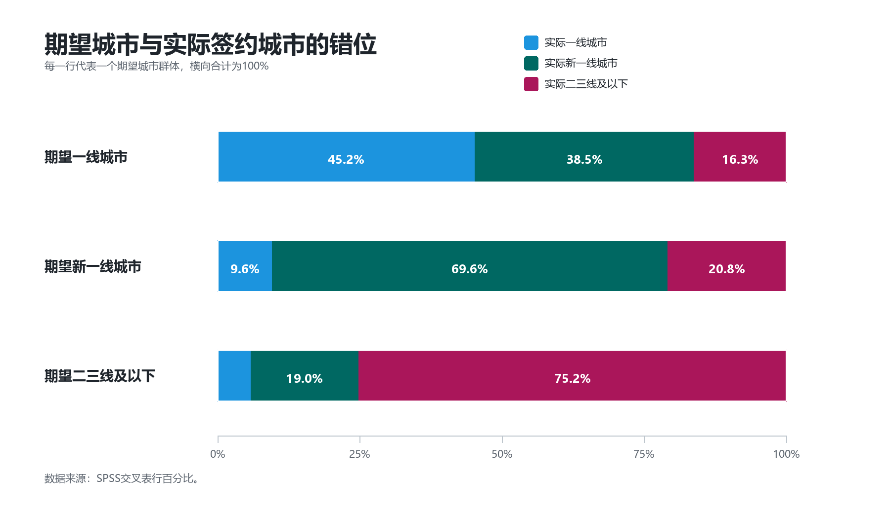
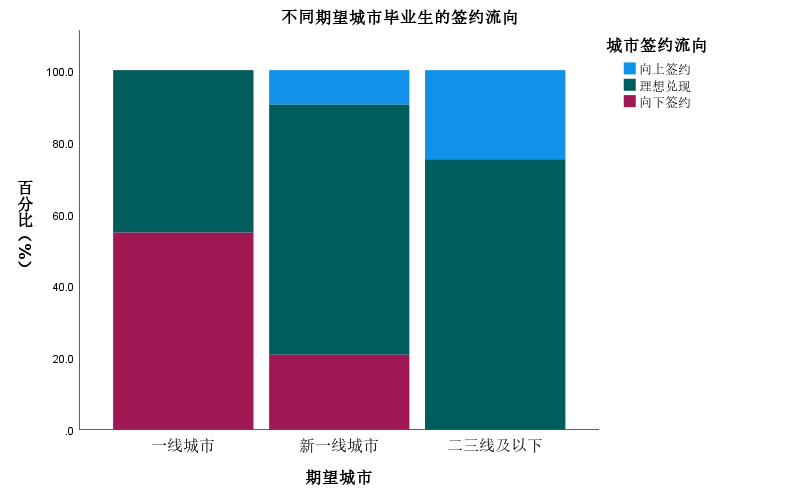
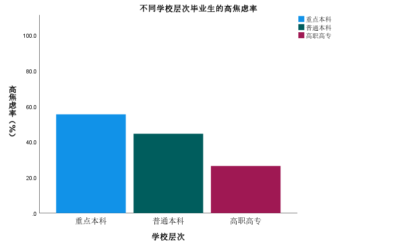
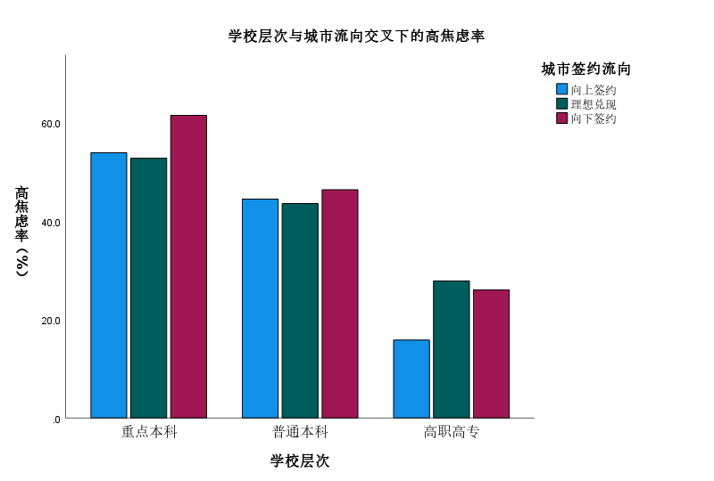

这1000名毕业生的就业故事，藏在两列城市名称之间：一列写着“期望”，一列写着“签约”。把两列并排放下去，原本清晰的城市志愿开始松动。一线仍在许多人的意向表上靠前，但最终的签约落款，更多地落到了新一线。城市没有从他们的想象中消失，只是在现实筛选之后，被重新排序。
这种排序不是一句“逃离一线”能够概括的。样本中，39.8%的毕业生最终签约城市与原本期望不一致。这个比例意味着，城市选择并非只发生在求职开始时，它还会在面试、竞争、薪酬、生活成本和签约机会的层层筛选中被改写。
一线的吸引力仍在，只是它不再稳稳接住所有期待；新一线的分量变重，也并不只是因为毕业生退而求其次。更复杂的是，当城市结果落定，焦虑并没有随之退场。它继续停在那些目标更高、比较更强、对签约结果更敏感的人身上。
愿望里的一线，合同里的新一线
从意向看，一线和新一线仍是毕业生最集中的选择。1000名样本中，期望进入一线城市的有416人，占41.6%；期望进入新一线城市的有447人，占44.7%。相比之下，期望二三线及以下城市的只有137人，占13.7%。
但签约结果把这种想象重新排列。最终签约一线城市的只有239人，占23.9%；签约新一线城市的达到497人，占49.7%；签约二三线及以下城市的为264人，占26.4%。一线从意向中的重要目标，变成了结果中的少数落点；新一线则从期待中的选项，变成了最大实际去向。
最能体现落差的，是期望一线城市的群体。416名一线期待者中，最终留在一线的比例为45.2%，转向新一线的比例为38.5%，签约二三线及以下的比例为16.3%。这些数字不必被简单理解为失败，却共同说明：一线仍有吸引力，但它没有完全吸纳那些奔向它的毕业生。

图1中，第一根柱子的分裂最有意味：代表一线的色块没有占满整条柱，新一线和二三线及以下共同切走了超过一半的位置。这种视觉上的偏移，正是毕业季城市选择的现实面貌。理想没有消失，但它被竞争门槛、岗位供给、生活成本和个人承受力重新校准。
不是回流，而是城市价值的重新排序
把视线从“一线是否留住人”移开，可以看到更丰富的流动。按照期望城市与实际城市的层级关系，毕业生签约结果可以分成三类：理想兑现、向下签约和向上签约。1000人中，602人实现原本期待的城市层级，占60.2%；321人签约到低于期望的城市层级，占32.1%；77人进入高于期望的城市层级，占7.7%。
新一线之所以重要，正在于它承担了双重意义。对从一线流出的人来说，它可能是一种现实妥协；对原本期待较低层级城市的人来说，它又可能是一次向上抵达。同一个城市层级，在不同毕业生那里有不同含义。

过去，城市层级常被理解成一架单向梯子：一线在上，新一线居中，二三线及以下在下。但就业市场并不总按这架梯子运行。一个行业在新一线可能更容易进入，一个岗位在二三线可能更稳定，一个生活成本较低的城市也可能提供更长久的安全感。
焦虑留在高期待者身上
城市错位解释了毕业生去了哪里，却不足以解释他们为什么焦虑。真正让求职心态显出层次的，是学校层次。全体样本的求职焦虑平均得分为6.05；分学校层次看，重点本科平均6.73，普通本科6.29，高职高专5.27。
如果把7分及以上定义为高焦虑，差距更加直观：重点本科毕业生高焦虑率为55.4%，普通本科为44.5%，高职高专为26.4%。也就是说，重点本科群体中，每两个人大约就有一个处在较高焦虑区间。

这组结果有反差。人们常把就业焦虑想象成学历弱势者的压力，但数据中的重点本科毕业生反而更容易处在高焦虑区间。这不一定意味着他们更难就业，而可能意味着他们更难接受“不够理想”的就业。
焦虑因此不只是现实压力，也是一种期待的重量。对一些重点本科毕业生来说，签约并不意味着焦虑结束，因为他们还要面对另一个问题：这份工作、这座城市、这个起点，是否配得上过去多年积累起来的自我想象。
城市落差之外，还有身份期待
把学校层次与城市流向叠在一起看，焦虑的结构更清楚。重点本科毕业生无论是向上签约、理想兑现还是向下签约，高焦虑率都维持在较高水平；其中，向下签约者达到61.4%。普通本科三类流向的高焦虑率集中在四成多；高职高专整体更低。

这说明，焦虑并不只由“有没有去成理想城市”决定。对高期待群体来说，即使城市层级实现了原本期待，压力也可能仍然存在；一旦签约城市低于预期，这种压力会被进一步放大。
投递简历数量在这份数据中没有提供足够解释力。1000名毕业生里，999人的投递简历数量为1，只有1人为2；重点本科与高职高专的平均投递数量同为1.00。更有解释力的，是城市期待、学校层次和自我定位之间的交叉。
不是逃离一线，而是重新估价生活
这份数据呈现的毕业季，并不是简单的“逃离一线”。一线仍被大量期待，只是签约结果把一部分人推向了新一线和更低层级城市。新一线的上升，也不是对一线的简单替代，而是毕业生在机会、成本、竞争和生活可达性之间重新估价后的结果。
这也提醒我们，就业指导不能只停留在“去大城市”或“降低期待”的二选一里。更需要被看见的，是毕业生如何理解城市机会，如何评估学历优势与市场竞争之间的距离，以及如何在结果不完全符合期待时重新建立心理秩序。
就业结果并不是理想的终止，而是下一轮自我定位的开始。城市会给出机会，也会设置门槛；学历会带来起点，也会制造压力。真正成熟的就业叙事，应当同时看见这两面。